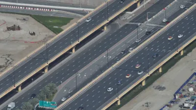
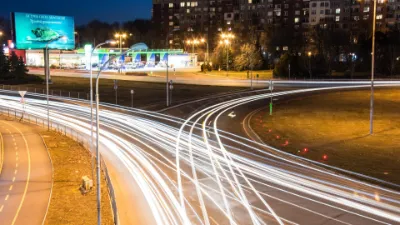

Aviso importante: Este sitio web es un recurso informativo independiente y no está afiliado ni asociado con el gobierno de México o cualquier entidad gubernamental oficial. La información proporcionada tiene fines educativos e informativos únicamente.
Las autopistas más peligrosas del mundo y cómo conducir en ellas

Cada año, miles de personas pierden la vida en accidentes de tráfico en todo el mundo. Algunas carreteras son particularmente peligrosas debido a su diseño, condiciones climáticas extremas o factores humanos. En este artículo, exploraremos algunas de las autopistas más peligrosas del mundo, incluyendo algunas en México, y ofreceremos consejos prácticos para conducir de manera segura en estas vías de alto riesgo.
Las autopistas más peligrosas del mundo
1. La Carretera de la Muerte (Bolivia)
Conocida oficialmente como la carretera Yungas, esta vía de 61 kilómetros que conecta La Paz con Coroico es considerada la más peligrosa del mundo. Con precipicios de hasta 600 metros sin barreras de protección, curvas cerradas y un ancho de apenas 3 metros en algunos tramos, cobraba un promedio de 200 a 300 vidas al año antes de que se construyera una ruta alternativa.
2. Autopista James Dalton (Alaska, EE.UU.)
Esta carretera de 666 kilómetros atraviesa algunas de las regiones más remotas y hostiles de Alaska. Las condiciones climáticas extremas, con temperaturas que pueden descender a -60°C, visibilidad reducida y superficie resbaladiza la convierten en un desafío incluso para los conductores más experimentados.
3. Autopista Zoji La (India)
Situada en el Himalaya a más de 3.500 metros de altitud, esta carretera estrecha y sin pavimentar está expuesta a avalanchas, deslizamientos de tierra y condiciones meteorológicas impredecibles. Durante el invierno permanece cerrada debido a la nieve.
4. Autopista Sichuan-Tíbet (China)
Con 2.142 kilómetros de longitud y atravesando 14 montañas con altitudes superiores a 4.000 metros, esta carretera enfrenta a los conductores a deslizamientos de tierra, avalanchas y cambios bruscos de clima. Se estima que muere una persona por cada 1.000 conductores que la transitan.
Las carreteras más peligrosas de México
1. México-Acapulco (Autopista del Sol)
A pesar de ser una autopista moderna, la México-Acapulco presenta varios factores de riesgo: curvas pronunciadas, pendientes empinadas y condiciones climáticas que pueden cambiar rápidamente. Durante la temporada de lluvias, los deslizamientos de tierra son frecuentes. Además, la alta velocidad a la que circulan muchos conductores aumenta significativamente el riesgo de accidentes graves.
2. México-Querétaro
Esta autopista de alta velocidad registra uno de los mayores índices de accidentes en el país debido principalmente al exceso de velocidad, la fatiga de los conductores y el alto volumen de tráfico, especialmente de vehículos pesados.
3. Tijuana-Ensenada
La carretera escénica entre Tijuana y Ensenada ofrece vistas espectaculares del Pacífico, pero también presenta riesgos significativos: acantilados sin barreras de protección, curvas cerradas y deslizamientos de tierra frecuentes. En 2013, un tramo de esta carretera colapsó debido a un deslizamiento de tierra.
4. Durango-Mazatlán
Aunque la nueva autopista ha mejorado significativamente la seguridad, la antigua carretera que atraviesa la Sierra Madre Occidental, conocida como "La Espinazo del Diablo", sigue siendo extremadamente peligrosa con sus más de 2.000 curvas y precipicios de cientos de metros.
Factores que hacen peligrosa una carretera
Varios elementos pueden contribuir a que una carretera sea particularmente peligrosa:
- Diseño y construcción: Curvas cerradas, pendientes pronunciadas, ausencia de barreras de protección o arcenes.
- Condiciones climáticas: Niebla, lluvia intensa, nieve, hielo o vientos fuertes.
- Entorno geográfico: Montañas, precipicios, zonas propensas a deslizamientos de tierra o avalanchas.
- Mantenimiento deficiente: Pavimento en mal estado, señalización inadecuada o ausente, iluminación insuficiente.
- Factores humanos: Exceso de velocidad, conducción bajo los efectos del alcohol, fatiga, distracciones.
- Volumen y tipo de tráfico: Alta densidad de vehículos, mezcla de vehículos pesados y ligeros, presencia de peatones o animales.
Consejos para conducir en carreteras peligrosas
Si debes transitar por alguna de estas vías de alto riesgo, estos consejos pueden ayudarte a hacerlo de manera más segura:
Antes del viaje
- Investiga la ruta: Infórmate sobre las características de la carretera, puntos de peligro y servicios disponibles.
- Verifica las condiciones climáticas: Consulta el pronóstico del tiempo y evita viajar en condiciones adversas.
- Revisa tu vehículo: Asegúrate de que los frenos, neumáticos, luces y limpiaparabrisas estén en perfecto estado.
- Planifica paradas: En viajes largos, programa descansos cada dos horas para evitar la fatiga.
- Informa a alguien: Comunica tu ruta y hora estimada de llegada a un familiar o amigo.
Durante la conducción
- Respeta los límites de velocidad: Adapta siempre tu velocidad a las condiciones de la vía y la visibilidad.
- Mantén distancia de seguridad: Aumenta la distancia con el vehículo que te precede, especialmente en condiciones adversas.
- Anticípate: Observa la carretera lo más lejos posible para detectar peligros con antelación.
- Usa las luces adecuadamente: Enciende las luces de cruce incluso de día en carreteras de montaña para aumentar tu visibilidad.
- Evita adelantamientos arriesgados: No adelantes en curvas, pendientes o zonas con visibilidad reducida.
- Conduce a la defensiva: Asume que otros conductores pueden cometer errores y estate preparado para reaccionar.
- Usa el freno motor: En descensos prolongados, utiliza marchas cortas para controlar la velocidad sin sobrecalentar los frenos.
- Evita distracciones: No uses el teléfono móvil ni manipules el GPS mientras conduces.
En caso de emergencia
- Mantén la calma: El pánico puede llevarte a tomar decisiones erróneas.
- Señaliza tu posición: Si debes detenerte, coloca los triángulos de emergencia y enciende las luces de emergencia.
- Llama a emergencias: En México, marca el 911 para solicitar ayuda.
- Permanece en un lugar seguro: Si es posible, espera la ayuda fuera del vehículo y lejos de la calzada.
Tecnologías que mejoran la seguridad en carreteras peligrosas
Los avances tecnológicos están contribuyendo a hacer más seguras incluso las carreteras más peligrosas:
- Sistemas de asistencia a la conducción: Control de estabilidad, asistente de frenada de emergencia, control de descenso en pendientes.
- Aplicaciones de navegación: Proporcionan información en tiempo real sobre el estado de las carreteras, condiciones climáticas y alertas de peligro.
- Mejoras en infraestructura: Barreras de contención más efectivas, pavimentos antideslizantes, señalización inteligente.
- Vehículos conectados: Permiten la comunicación entre vehículos y con la infraestructura para anticipar peligros.
Conclusión
Aunque algunas carreteras presentan riesgos objetivos debido a su diseño o entorno, la mayoría de los accidentes son evitables si se adoptan las precauciones adecuadas. La combinación de una conducción responsable, un vehículo en buen estado y el uso de tecnologías de asistencia puede reducir significativamente el riesgo incluso en las vías más peligrosas.
Recuerda que ningún destino merece poner en riesgo tu vida o la de tus acompañantes. Si las condiciones son demasiado adversas, siempre es mejor posponer el viaje o buscar rutas alternativas más seguras.
Cómo funcionan los radares de velocidad y por qué son importantes
Los radares de velocidad se han convertido en una herramienta fundamental para el control del tráfico en las ciudades y carreteras de México y el mundo. Aunque a menudo son vistos con recelo por los conductores, estos dispositivos juegan un papel crucial en la seguridad vial. En este artículo, explicamos cómo funcionan los diferentes tipos de radares, su efectividad para reducir accidentes y la normativa que regula su uso en México.
¿Qué son los radares de velocidad?
Los radares de velocidad son dispositivos que utilizan ondas electromagnéticas para detectar la velocidad a la que circulan los vehículos. Su principal objetivo es identificar a aquellos conductores que exceden los límites de velocidad establecidos, contribuyendo así a la seguridad vial mediante la disuasión y sanción de comportamientos de riesgo.
Tipos de radares de velocidad
1. Radares fijos
Son dispositivos instalados permanentemente en un punto específico de la vía. Suelen estar ubicados en cabinas, postes o pórticos y están señalizados para alertar a los conductores de su presencia. En México, es obligatorio que los radares fijos estén indicados con señalización vertical.
Ventajas: Funcionamiento continuo, efecto disuasorio en puntos de alta siniestralidad.
Limitaciones: Los conductores habituales conocen su ubicación y pueden reducir la velocidad solo al pasar frente a ellos.
2. Radares móviles
Son equipos portátiles que pueden ser trasladados de un lugar a otro. Generalmente son operados por agentes de tránsito y pueden instalarse en trípodes, vehículos estacionados o incluso sostenerse manualmente.
Ventajas: Flexibilidad para ubicarse en diferentes puntos, factor sorpresa que aumenta su efecto disuasorio.
Limitaciones: Requieren la presencia de personal para su operación, lo que limita su tiempo de funcionamiento.
3. Radares de tramo
También conocidos como radares de velocidad media, estos sistemas miden el tiempo que tarda un vehículo en recorrer una distancia determinada, calculando así su velocidad media en ese tramo. Utilizan cámaras de reconocimiento de matrículas ubicadas al inicio y final del tramo controlado.
Ventajas: Evitan frenazos bruscos ante el radar y fomentan una conducción más constante y segura a lo largo de todo el tramo.
Limitaciones: Mayor complejidad técnica y coste de implementación.
4. Radares de semáforo
Estos dispositivos no solo detectan excesos de velocidad, sino también infracciones por saltarse semáforos en rojo. Son especialmente útiles en cruces urbanos con alta tasa de accidentes.
Ventajas: Combaten dos infracciones de alto riesgo simultáneamente.
Limitaciones: Requieren una instalación más compleja integrada con el sistema de semáforos.
Tecnologías utilizadas en los radares de velocidad
Radar Doppler
Es la tecnología más tradicional y se basa en el efecto Doppler: el cambio de frecuencia que experimenta una onda cuando existe un movimiento relativo entre la fuente emisora y el receptor. El radar emite ondas electromagnéticas que rebotan en el vehículo y regresan al dispositivo. La diferencia entre la frecuencia emitida y la recibida permite calcular la velocidad del vehículo.
Radar láser (LIDAR)
Utiliza pulsos de luz láser en lugar de ondas de radio. Mide el tiempo que tarda la luz en llegar al vehículo y regresar, calculando la distancia. Al realizar múltiples mediciones en milisegundos, puede determinar con gran precisión la velocidad del vehículo.
Ventajas: Mayor precisión y capacidad para apuntar a vehículos específicos incluso en tráfico denso.
Sistemas de reconocimiento de matrículas (ANPR)
Utilizados principalmente en radares de tramo, estos sistemas capturan imágenes de las matrículas y las procesan mediante software de reconocimiento óptico de caracteres. Al identificar el mismo vehículo en dos puntos diferentes, pueden calcular su velocidad media.
Efectividad de los radares en la reducción de accidentes
Numerosos estudios internacionales han demostrado la eficacia de los radares de velocidad para reducir la siniestralidad vial:
- Según la Organización Mundial de la Salud, la instalación de radares puede reducir los accidentes graves entre un 20% y un 30% en las zonas controladas.
- Un estudio realizado en España mostró una reducción del 40% en accidentes mortales en tramos donde se instalaron radares de velocidad.
- En México, la implementación de fotomultas en la Ciudad de México logró reducir en un 21% los accidentes de tránsito en los primeros dos años de operación, según datos de la Secretaría de Movilidad.
Esta efectividad se explica por varios factores:
- Efecto disuasorio: La simple presencia de radares, o la posibilidad de su presencia en el caso de los móviles, hace que muchos conductores moderen su velocidad.
- Reducción de la velocidad media: Incluso pequeñas reducciones en la velocidad media tienen un impacto significativo en la gravedad de los accidentes.
- Identificación de puntos negros: Los datos recopilados por los radares permiten identificar tramos con alta incidencia de excesos de velocidad, facilitando la implementación de medidas adicionales de seguridad.
Normativa sobre radares en México
En México, la regulación sobre radares de velocidad varía según la entidad federativa, aunque existen algunos principios comunes:
- Señalización obligatoria: Los radares fijos deben estar señalizados mediante señales verticales que adviertan de su presencia.
- Homologación y calibración: Los dispositivos deben estar homologados y someterse a calibraciones periódicas para garantizar la precisión de las mediciones.
- Margen de error: Se aplica un margen de error técnico que beneficia al conductor, generalmente entre el 5% y el 7% de la velocidad detectada.
- Evidencia fotográfica: Las sanciones deben ir acompañadas de una fotografía que muestre claramente el vehículo y su matrícula.
En la Ciudad de México, el Reglamento de Tránsito establece que las fotomultas por exceso de velocidad se aplican cuando se supera en más de 10 km/h el límite establecido. Los límites generales son:
- 20 km/h en zonas escolares, de hospitales, asilos, albergues y casas hogar.
- 30 km/h en calles secundarias y laterales.
- 50 km/h en avenidas primarias sin acceso controlado.
- 80 km/h en vías de acceso controlado.
Controversias y críticas
A pesar de su efectividad demostrada, los radares de velocidad no están exentos de controversias:
- Finalidad recaudatoria: Una crítica frecuente es que su objetivo principal es recaudatorio más que de seguridad vial. Sin embargo, los estudios muestran que su correcta implementación sí reduce los accidentes.
- Ubicación inadecuada: A veces se cuestiona la ubicación de los radares en tramos donde no hay una alta siniestralidad o donde los límites de velocidad parecen excesivamente restrictivos.
- Problemas de fiabilidad: Ocasionalmente surgen casos de multas erróneas debido a fallos técnicos o confusiones en la identificación de vehículos.
Consejos para conductores
Para evitar sanciones por exceso de velocidad y, lo más importante, contribuir a la seguridad vial:
- Respeta los límites de velocidad: Es la medida más efectiva y sencilla. Recuerda que están establecidos en función de las características de la vía y su entorno.
- Presta atención a la señalización: Los límites pueden variar en diferentes tramos de una misma vía.
- Mantén una velocidad constante: Evita aceleraciones y frenazos bruscos, especialmente ante la presencia de radares.
- Utiliza el control de crucero: Si tu vehículo dispone de esta tecnología, puede ayudarte a mantener una velocidad constante en carretera.
- Adapta la velocidad a las condiciones: Los límites máximos están pensados para condiciones óptimas. Con lluvia, niebla o tráfico denso, debes reducir la velocidad aunque estés por debajo del límite legal.
El futuro de los sistemas de control de velocidad
La tecnología de control de velocidad continúa evolucionando hacia sistemas más sofisticados y efectivos:
- Radares inteligentes: Capaces de detectar simultáneamente múltiples infracciones como exceso de velocidad, uso del teléfono móvil o falta de cinturón de seguridad.
- Sistemas embarcados: La Unión Europea ha aprobado que todos los vehículos nuevos a partir de 2022 incorporen limitadores inteligentes de velocidad (ISA) que avisan al conductor cuando supera el límite.
- Integración con smart cities: Sistemas de control de tráfico que adaptan los límites de velocidad en tiempo real según las condiciones de tráfico, meteorológicas o eventos especiales.
Conclusión
Los radares de velocidad, más allá de su función sancionadora, son herramientas fundamentales para la seguridad vial. La evidencia científica demuestra que su correcta implementación contribuye significativamente a reducir la siniestralidad y la gravedad de los accidentes.
Como conductores responsables, debemos entender que los límites de velocidad no son arbitrarios, sino que están establecidos para proteger a todos los usuarios de las vías. Respetar estos límites no solo nos evitará sanciones económicas, sino que puede marcar la diferencia entre un viaje seguro y un accidente con consecuencias potencialmente graves.
Reglas de tránsito en México: lo que todo conductor debe saber

Conocer y respetar las reglas de tránsito es fundamental para garantizar la seguridad vial y evitar sanciones. En México, aunque existe un marco general, cada estado y municipio puede tener sus propias regulaciones específicas. En este artículo, presentamos una guía completa de las principales normas de tránsito que todo conductor debe conocer en territorio mexicano.
Marco legal del tránsito en México
El sistema regulatorio del tránsito en México se estructura en varios niveles:
- Ley General de Tránsito y Vialidad: Establece los principios generales a nivel federal.
- Reglamentos estatales: Cada estado tiene su propio reglamento de tránsito con particularidades locales.
- Reglamentos municipales: Los municipios pueden tener disposiciones específicas adicionales.
- Normas Oficiales Mexicanas (NOM): Establecen especificaciones técnicas para vehículos, señalización, etc.
Esta estructura multinivel puede generar confusión, por lo que es recomendable familiarizarse con las regulaciones específicas de las áreas por las que se transita habitualmente.
Documentación obligatoria
Todo conductor en México debe portar:
- Licencia de conducir vigente: Apropiada para el tipo de vehículo que se conduce. Las licencias tienen diferentes categorías según el tipo de vehículo (particular, transporte público, motocicleta, etc.).
- Tarjeta de circulación: Documento que acredita el registro legal del vehículo.
- Comprobante de verificación vehicular: Obligatorio en zonas metropolitanas y estados con programas de verificación ambiental.
- Póliza de seguro de responsabilidad civil: Obligatorio en carreteras federales y en la mayoría de los estados.
- Identificación personal: Aunque no es estrictamente obligatorio, es recomendable llevar una identificación oficial.
La falta de cualquiera de estos documentos puede resultar en multas significativas e incluso en la retención del vehículo en algunos casos.
Reglas básicas de circulación
Límites de velocidad
Aunque pueden variar según la jurisdicción, los límites generales son:
- Zonas escolares y hospitalarias: 20 km/h
- Zonas urbanas residenciales: 40 km/h
- Avenidas principales: 50-60 km/h
- Vías rápidas urbanas: 80 km/h
- Carreteras estatales: 90-100 km/h
- Autopistas: 100-110 km/h
Prioridad de paso
- Tienen prioridad los vehículos de emergencia con sirenas y luces encendidas.
- En intersecciones sin semáforo, tiene prioridad quien llegue primero.
- En glorietas, tiene prioridad quien ya está dentro de la rotonda.
- En intersecciones con la misma jerarquía vial, tiene prioridad el vehículo que viene por la derecha.
- Los peatones siempre tienen prioridad en los cruces peatonales señalizados.
Uso del cinturón de seguridad
Es obligatorio para todos los ocupantes del vehículo, tanto en asientos delanteros como traseros. Los niños menores de 12 años deben viajar en los asientos traseros y, dependiendo de su edad y tamaño, utilizar sistemas de retención infantil apropiados.
Uso del teléfono móvil
Está prohibido el uso de teléfonos móviles mientras se conduce, a menos que se utilice un sistema de manos libres. En muchos estados, las sanciones por esta infracción se han endurecido significativamente en los últimos años.
Conducción bajo los efectos del alcohol
Los límites de alcoholemia varían según el estado, pero generalmente son:
- Conductores particulares: 0.40-0.50 g/L en sangre (equivalente a aproximadamente 0.25 mg/L en aire espirado).
- Conductores de transporte público y mercancías: 0.0 g/L (tolerancia cero).
- Conductores noveles (menos de 2 años con licencia): 0.0-0.20 g/L según el estado.
Las sanciones incluyen multas elevadas, retención del vehículo, suspensión de la licencia y, en casos graves o reincidentes, arresto administrativo.
Reglas específicas por tipo de vía
En ciudad
- Respeta los carriles exclusivos para transporte público o bicicletas.
- No estaciones en lugares prohibidos (rampas para discapacitados, hidrantes, entradas de vehículos, etc.).
- Cede el paso a peatones aunque no exista un cruce peatonal señalizado.
- Respeta las zonas de carga y descarga y sus horarios establecidos.
- No utilices el claxon salvo en situaciones de peligro inminente.
En carretera
- Mantén la derecha excepto para rebasar.
- Señaliza con anticipación tus maniobras (cambios de carril, incorporaciones, salidas).
- Mantén la distancia de seguridad con el vehículo que te precede (regla de los 2 segundos).
- Reduce la velocidad en condiciones climáticas adversas.
- Respeta las áreas de descanso obligatorio para conductores de vehículos pesados.
En autopistas de peaje
- Utiliza los carriles según la velocidad a la que circulas (los carriles izquierdos son para velocidades mayores).
- No te detengas en el acotamiento excepto en caso de emergencia.
- Si debes detenerte por emergencia, coloca los triángulos de señalización a la distancia adecuada.
- Respeta las indicaciones de los paneles de mensajería variable.
- Mantén encendidas las luces de cruce incluso durante el día en muchas autopistas.
Infracciones y sanciones comunes
Las multas de tránsito en México se calculan generalmente en Unidades de Medida y Actualización (UMA), cuyo valor se actualiza anualmente. Algunas de las infracciones más comunes y sus sanciones aproximadas son:
- Exceso de velocidad: 5-20 UMA
- No respetar semáforo en rojo: 10-15 UMA
- Estacionamiento en lugar prohibido: 5-10 UMA
- No usar cinturón de seguridad: 5-10 UMA
- Uso de teléfono móvil al conducir: 10-15 UMA
- Conducir sin licencia: 10-20 UMA
- Conducir sin seguro obligatorio: 20-40 UMA
- Conducir bajo los efectos del alcohol (primera vez): 30-50 UMA, retención del vehículo y posible arresto administrativo
Además de las multas económicas, algunas infracciones conllevan la acumulación de puntos negativos en la licencia de conducir en estados que han implementado este sistema.
Programas de restricción vehicular
Hoy No Circula
Aplicable en la Zona Metropolitana del Valle de México y algunas otras ciudades, restringe la circulación de vehículos según el último dígito de la matrícula, el color del engomado y el resultado de la verificación vehicular. Las restricciones pueden intensificarse durante contingencias ambientales.
Doble Hoy No Circula
Se implementa durante contingencias ambientales severas, ampliando las restricciones a más vehículos, incluyendo algunos que normalmente estarían exentos.
Restricciones por matrículas foráneas
Algunos estados y municipios tienen restricciones específicas para vehículos con placas de otras entidades, especialmente en zonas turísticas durante temporadas altas.
Particularidades regionales importantes
Algunas diferencias notables entre regiones incluyen:
- Ciudad de México: Programa Hoy No Circula, verificación vehicular obligatoria, fotomultas, alcoholímetro permanente.
- Nuevo León (Monterrey): Sistema de fotomultas, programa de verificación vehicular, restricciones por contingencias ambientales.
- Jalisco (Guadalajara): Programa de verificación responsable, fotomultas, alcoholimetría intensiva en fines de semana.
- Quintana Roo (zonas turísticas): Mayor tolerancia con turistas extranjeros, pero sanciones severas por conducción bajo efectos del alcohol.
- Baja California: Regulaciones especiales para vehículos con matrícula estadounidense, incluyendo requisitos de seguro específicos.
Consejos para evitar infracciones
- Mantén tu documentación en regla y siempre contigo: Licencia, tarjeta de circulación, comprobante de verificación y póliza de seguro.
- Infórmate sobre las regulaciones locales: Especialmente si viajas a otro estado o municipio.
- Utiliza aplicaciones de navegación actualizadas: Muchas incluyen información sobre límites de velocidad y ubicación de radares.
- Respeta rigurosamente los límites de velocidad: Especialmente en zonas urbanas y escolares.
- Evita completamente el alcohol si vas a conducir: Incluso pequeñas cantidades pueden afectar tus reflejos y superar los límites legales.
- Estaciona solo en lugares permitidos: En caso de duda, busca un estacionamiento público aunque implique un costo adicional.
- Mantén tu vehículo en buen estado: Luces, frenos, neumáticos y demás elementos de seguridad deben funcionar correctamente.
Qué hacer si recibes una multa
Si un agente de tránsito te detiene por una infracción:
- Mantén la calma y sé respetuoso.
- Solicita que te explique claramente la infracción cometida.
- Pide que te muestre su identificación oficial.
- Revisa que la boleta de infracción contenga todos los datos correctos.
- Si consideras que no has cometido la infracción, puedes expresarlo respetuosamente, pero evita discutir en el momento.
- Nunca ofrezcas dinero para evitar la multa, ya que esto constituye un delito.
Para impugnar una multa:
- Verifica los plazos para impugnación (generalmente 15 días hábiles).
- Reúne evidencias que respalden tu caso (fotografías, videos, testimonios).
- Presenta un escrito de impugnación ante la autoridad correspondiente.
- Da seguimiento a tu caso mediante los canales oficiales.
Conclusión
Conocer y respetar las reglas de tránsito no solo es una obligación legal, sino una responsabilidad cívica que contribuye a la seguridad de todos los usuarios de las vías. En México, donde las estadísticas de accidentes viales siguen siendo preocupantes, cada conductor puede marcar la diferencia adoptando una actitud responsable al volante.
Recuerda que las reglas no son caprichosas: están diseñadas para proteger vidas. Más allá de evitar multas, el verdadero beneficio de cumplir con las normas de tránsito es contribuir a un sistema vial más seguro, eficiente y respetuoso para todos.
Guía completa de señales de tránsito en México

Las señales de tránsito son un lenguaje universal diseñado para comunicar información vital a los usuarios de las vías. Conocerlas e interpretarlas correctamente es fundamental para garantizar la seguridad vial. En este artículo, presentamos una guía completa de las señales de tránsito utilizadas en México, su significado y la importancia de respetarlas.
Importancia de las señales de tránsito
Las señales de tránsito cumplen múltiples funciones esenciales:
- Previenen accidentes: Advierten sobre peligros potenciales en la vía.
- Regulan el tráfico: Establecen prioridades y ordenan la circulación.
- Orientan a los usuarios: Proporcionan información sobre destinos, servicios y distancias.
- Homogenizan comportamientos: Crean un sistema predecible para todos los usuarios de la vía.
- Facilitan la movilidad: Contribuyen a un flujo de tráfico más eficiente y ordenado.
En México, las señales de tránsito están reguladas por la Norma Oficial Mexicana NOM-034-SCT2, que establece sus características, diseño y aplicación.
Clasificación de las señales de tránsito
Las señales de tránsito en México se clasifican en cuatro categorías principales:
1. Señales Preventivas
Tienen forma de rombo (diamante) con fondo amarillo y símbolos o leyendas en negro. Su función es advertir sobre condiciones peligrosas o inesperadas en la vía.
Ejemplos comunes:
- Curva: Advierte sobre una curva próxima, puede ser a la derecha o izquierda.
- Cruce de peatones: Indica la proximidad de un paso peatonal.
- Escuela: Señala la cercanía de una zona escolar.
- Ganado: Advierte sobre posible presencia de animales en la vía.
- Obras: Indica trabajos en la vía que pueden alterar la circulación normal.
- Pendiente pronunciada: Advierte sobre una bajada o subida con inclinación importante.
- Superficie resbaladiza: Indica que el pavimento puede estar resbaladizo, especialmente en condiciones de lluvia.
2. Señales Restrictivas
Generalmente tienen forma circular con fondo blanco, símbolos negros y borde rojo. Algunas tienen una línea diagonal roja que indica prohibición. Su función es indicar limitaciones o prohibiciones que regulan el uso de la vía.
Ejemplos comunes:
- Alto: Forma octagonal, fondo rojo con leyenda "ALTO" en blanco. Indica detención obligatoria.
- Ceda el paso: Triángulo invertido con borde rojo. Indica que se debe dar preferencia a los vehículos de la vía a la que se va a incorporar.
- Prohibido estacionarse: Círculo con una "E" cruzada por una línea diagonal roja.
- Prohibido el paso: Círculo con una barra horizontal blanca sobre fondo rojo.
- Límite de velocidad: Círculo con número que indica la velocidad máxima permitida en km/h.
- Prohibido rebasar: Indica que no está permitido adelantar a otros vehículos.
- Prohibido vuelta a la izquierda/derecha: Círculo con flecha cruzada por línea diagonal roja.
3. Señales Informativas
Generalmente rectangulares, proporcionan información sobre destinos, servicios, puntos de interés y orientación general. Se subdividen en:
a) Señales de Identificación: Fondo blanco con texto negro. Identifican carreteras y rutas.
- Escudo de carretera federal: Indica el número de una carretera federal.
- Escudo de autopista: Identifica autopistas de cuota.
- Ruta estatal: Identifica carreteras estatales.
b) Señales de Destino: Fondo verde con texto blanco en carreteras y autopistas; fondo blanco con texto negro en zonas urbanas.
- Poblaciones: Indican direcciones y distancias a poblaciones.
- Confirmativas: Confirman la ruta que se está siguiendo.
- Entronques: Indican bifurcaciones o incorporaciones próximas.
c) Señales de Recomendación e Información General: Fondo azul con símbolos blancos.
- Servicios: Indican la proximidad de servicios como hospitales, estaciones de combustible, restaurantes, etc.
- Turísticas: Señalan lugares de interés turístico.
- Información general: Proporcionan datos sobre distancias, altitudes, etc.
4. Señales de Obras
Tienen forma rectangular o de rombo con fondo naranja y símbolos negros. Indican la presencia de obras temporales en la vía y cómo circular en estas zonas.
Ejemplos comunes:
- Hombres trabajando: Advierte sobre personal trabajando en la vía.
- Desviación: Indica un cambio temporal en el trazado de la vía.
- Reducción de carriles: Advierte que el número de carriles disponibles se reducirá.
- Maquinaria en la vía: Indica presencia de maquinaria de construcción.
Marcas en el pavimento
Además de las señales verticales, las marcas en el pavimento son elementos fundamentales de la señalización vial:
Líneas longitudinales
- Línea continua: Prohibido rebasar o cambiar de carril.
- Línea discontinua: Permite rebasar o cambiar de carril si las condiciones son seguras.
- Línea continua con discontinua adyacente: Si la línea continua está de tu lado, no puedes rebasar; si es la discontinua, puedes hacerlo.
- Doble línea continua: Prohibido rebasar en ambos sentidos.
Marcas transversales
- Línea de alto: Indica dónde deben detenerse los vehículos.
- Paso peatonal (cebra): Área destinada al cruce de peatones.
- Línea de ceda el paso: Indica dónde deben detenerse los vehículos cuando sea necesario ceder el paso.
Otras marcas
- Flechas direccionales: Indican los movimientos permitidos en cada carril.
- Símbolos: Como bicicletas o autobuses, indican carriles exclusivos.
- Cajones de estacionamiento: Delimitan áreas para estacionar vehículos.
- Áreas de exclusión (cebreado): Zonas por las que no se debe circular.
Semáforos
Los semáforos son dispositivos de señalización luminosa que regulan el tráfico en intersecciones:
Semáforos para vehículos
- Luz roja: Detención obligatoria.
- Luz ámbar (amarilla): Advierte que el semáforo cambiará a rojo. Prepararse para detenerse.
- Luz verde: Permite el paso.
- Flecha verde: Permite el paso solo en la dirección indicada.
- Luz roja intermitente: Equivale a una señal de alto. Detenerse y continuar si no hay peligro.
- Luz ámbar intermitente: Precaución. Reducir la velocidad y continuar con atención.
Semáforos para peatones
- Figura estática de peatón en rojo: No cruzar.
- Figura de peatón caminando en verde: Permite cruzar.
- Figura intermitente de peatón en verde o contador regresivo: Apresurarse a terminar de cruzar o no iniciar el cruce.
Señalización temporal y de emergencia
En situaciones especiales, se utilizan señales temporales:
- Conos y barreras: Delimitan áreas de trabajo o accidentes.
- Banderines: Utilizados por personal para dirigir el tráfico en zonas de obras.
- Triángulos de emergencia: Deben colocarse a una distancia adecuada cuando un vehículo queda inmovilizado en la vía.
- Luces de emergencia: Utilizadas por vehículos de emergencia o para señalizar situaciones de peligro.
Particularidades de la señalización en México
Aunque México sigue en gran medida los estándares internacionales de señalización, existen algunas particularidades:
- Topes o reductores de velocidad: Muy comunes en México, especialmente en zonas urbanas y pueblos. Se señalizan con un rombo amarillo con líneas negras onduladas.
- Señales bilingües: En zonas turísticas y fronterizas, muchas señales incluyen texto en español e inglés.
- Señalización de zonas arqueológicas: Señales específicas con fondo marrón que indican sitios de interés histórico y cultural.
- Indicaciones de casetas de peaje: Señalización específica para autopistas de cuota, incluyendo tarifas y formas de pago aceptadas.
- Señales de retorno: Indican puntos donde es posible cambiar de sentido en carreteras divididas.
Consejos para interpretar correctamente las señales
- Mantén la atención constante: Observa regularmente las señales mientras conduces.
- Anticípate: Las señales preventivas te avisan con antelación para que puedas reaccionar adecuadamente.
- Respeta la jerarquía: En caso de contradicción, los semáforos prevalecen sobre las señales, y las indicaciones de los agentes de tránsito prevalecen sobre ambos.
- Considera el contexto: Algunas señales, como los límites de velocidad, pueden variar según las condiciones (día/noche, lluvia, etc.).
- Mantente actualizado: La señalización puede cambiar con el tiempo, especialmente en zonas en desarrollo o con obras.
Consecuencias de no respetar las señales
Ignorar o no respetar las señales de tránsito puede tener graves consecuencias:
- Sanciones económicas: Multas que varían según la gravedad de la infracción y la entidad federativa.
- Puntos negativos: En estados con sistema de puntos en la licencia de conducir.
- Accidentes: Riesgo incrementado de colisiones, atropellos y otros siniestros viales.
- Responsabilidad civil y penal: En caso de accidente, no respetar una señal puede implicar mayor responsabilidad legal.
- Incremento en primas de seguro: Las infracciones frecuentes pueden aumentar el costo de tu seguro de auto.
Recursos para aprender sobre señalización vial
Si deseas profundizar en tu conocimiento sobre señales de tránsito, puedes consultar:
- El Manual del Conductor de tu estado, disponible generalmente en las oficinas de tránsito o en línea.
- La Norma Oficial Mexicana NOM-034-SCT2, que establece las características oficiales de las señales.
- Aplicaciones móviles educativas sobre señalización vial.
- Cursos de educación vial ofrecidos por autoridades de tránsito o autoescuelas.
- Sitios web oficiales de la Secretaría de Comunicaciones y Transportes (SCT) o de las secretarías de movilidad estatales.
Conclusión
Las señales de tránsito constituyen un lenguaje visual esencial para la seguridad y eficiencia de nuestro sistema vial. Conocerlas, interpretarlas correctamente y respetarlas no es solo una obligación legal, sino una responsabilidad compartida que contribuye a la protección de todos los usuarios de las vías.
En un país con altos índices de siniestralidad vial como México, el respeto a la señalización puede marcar la diferencia entre un viaje seguro y un accidente. Recuerda que las señales no son sugerencias, sino indicaciones obligatorias diseñadas para proteger vidas.